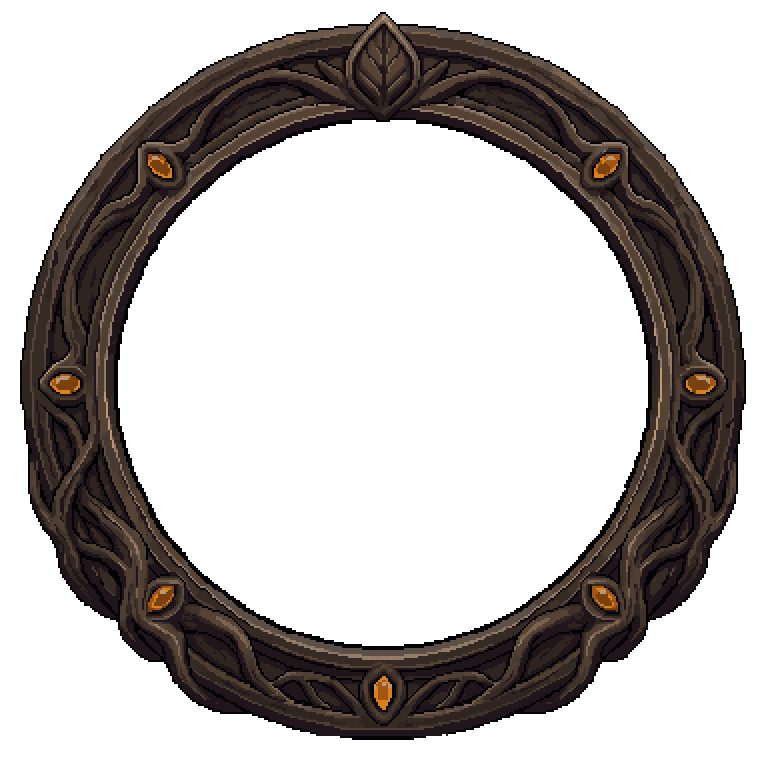
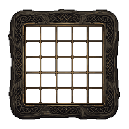
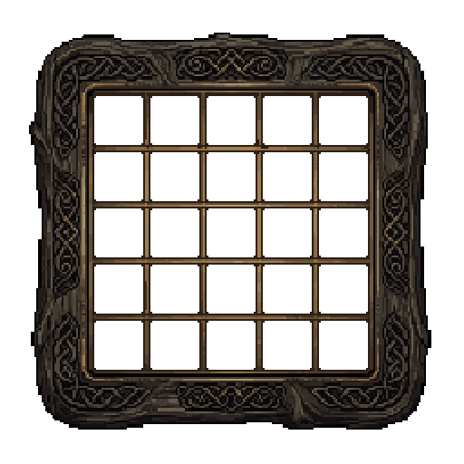

시안 전용 페이지 · 예시 데이터 · 실제 게임 미반영. 모든 이미지는 원본 픽셀아트를 최근접 이웃 방식으로 2배 확대한 @2x 자산입니다.
[연속 베기] 젬을 획득했습니다. 스킬 젬 탭에서 빛나는 젬을 선택하고 ‘장착’을 누르세요.

예시 상태: 가운데 5칸 열림(설계안의 액트 10 단계), 🔥 3개 공명, ⚡↔🟣(번개↔카오스) 맞닿음 억제. 설계안(docs/stump-cube-game-design.md)은 미구현입니다.
원본(칸 27~29px, 간격 30~32px)

통일 후(칸 27px, 간격 31px · 출력 @2x는 54/62px)
